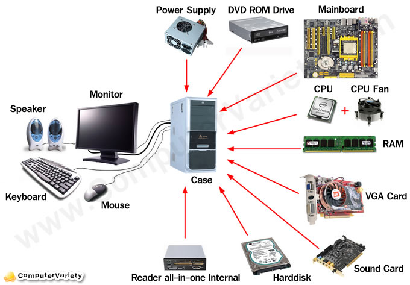
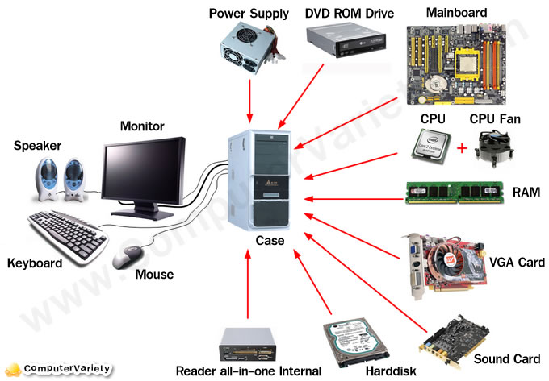
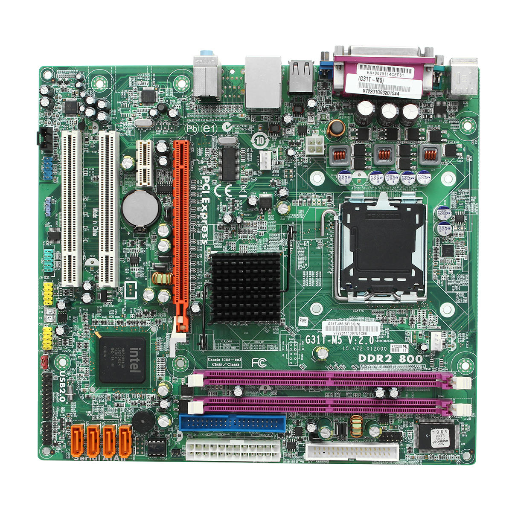
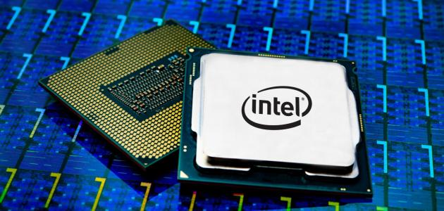
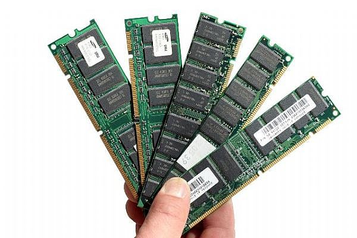
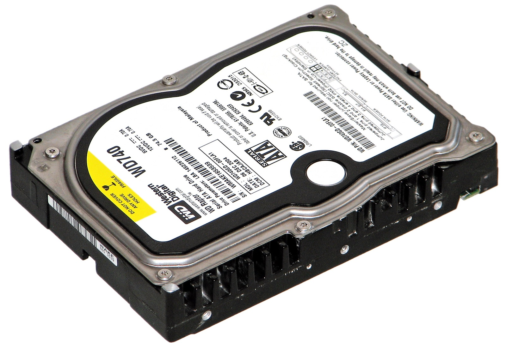
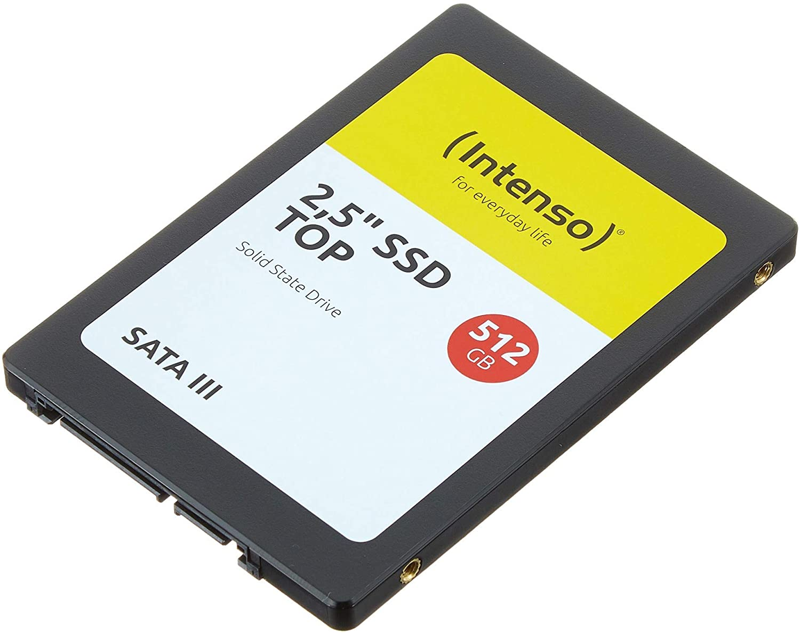
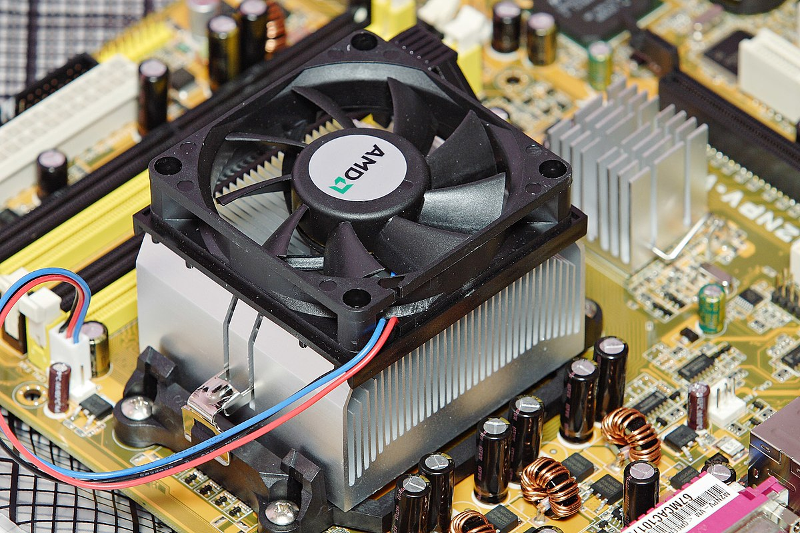

Computer Architecture
Internal components
 

Internal components are all the components inside the case of the computer.
Such as: -
- Motherboard: The primary circuit board inside the PC is its motherboard.
All components, inside and out, connect through the motherboard in some way.
Several important components are attached directly to the motherboard.
These include the complementary metal-oxide semiconductor (CMOS), which
stores some information, such as the system clock, when the computer is powered down.
Motherboards come in different sizes and standards, the most common are ATX
and MicroATX.It is on the size of A4 paper, its color is green, gold, blue or black.
From there, motherboards vary by the type of removable components they’re designed
to handle internally and what ports are available for attaching external devices.

-
Power supply: Other than its CMOS, which is powered by a replaceable CMOS battery
on the motherboard, every component in your PC relies on its power supply.
The power supply connects to some type of power source, whether that’s a battery
in the case of mobile computers or a power outlet in the case of desktop PCs.
In a desktop PC, you can see the power supply mounted inside the case with a power
cable connection on the outside and a handful of attached cables inside. Some of
these cables connect directly to the motherboard while others connect to other
components like drives and fans.

- Central processing unit (CPU): The CPU, often just called the processor, is the
component that contains the microprocessor. That microprocessor is the heart of all
the PC’s operations, and the performance of both hardware and software rely on the
processor’s performance. Intel and AMD are the largest CPU manufacturers for PCs,
though you’ll find others on the market, too. The two common CPU architectures are 32-bit
and 64-bit, and you’ll find that certain software relies on this architecture distinction.

- Random-access memory (RAM): Even the fastest processor needs a buffer to store
information while it’s being processed. The RAM is to the CPU as a countertop is to
a cook: It serves as the place where the ingredients and tools you’re working with
wait until you need to pick up and use them. Both a fast CPU and an ample amount of
RAM are necessary for a speedy PC. Each PC has a maximum amount of RAM it can handle,
and slots on the motherboard indicate the type of RAM the PC requires.

- Drives: A drive is a device intended to store data when it’s not in use.
A hard drive(Figure 1) or solid state drive(Figure 2) stores a PC’s operating system and software,
which we’ll look at more closely later. This category also includes optical drives(Figure 3)
such as those used for reading and writing CD, DVD and Blu-ray media. A drive
connects to the motherboard based on the type of drive controller technology it uses,
including the older IDE standard and the newer SATA standard.
|  |
 |
 |
| Figure 1 |
Figure 2 |
Figure 3 |
- Cooling devices: The more your computer processes, the more heat it generates.
The CPU and other components can handle a certain amount of heat. However, if a PC isn’t
cooled properly, it can overheat, causing costly damage to its components and circuitry.
Fans (Figure 1) are the most common device used to cool a PC. In addition, the CPU is covered
by a metallic block called a heat sink, which draws heat away from the CPU. Some serious
computer users, such as gamers, sometimes have more expensive heat management solutions,
like a water-cooled system (Figure 2), designed to deal with more intense cooling demands.
|  |
 |
| Figure 1 |
Figure 2 |
There are other internal components but they are optional.
Like:
Graphic card (vga card): have large numbers of parallel threads and many cores.
Used to give the user better performance that is needed to render complex image,
high-resolution 3D,...etc.4
Sound card: have a number of improved or added features, which in turn produce
better sound quality all around. Features like higher signal-to-noise ratios, lower harmonic
distortion, 24-bit sample rates, 192-kHz resolutions and of course additional APIs.5
Memory vs Storage
comparison between Main memory (RAM) and storage (Hard disk)
| RAM |
Hard disk(Hard drive) |
| Memory |
Storage |
Smaller amount
(typically 128MB-64GB) |
Much larger amount
(typically 80GB-4000GB) |
| Temporary storage of files and programs |
Permanent storage of files and programs |
| A little like real desktop - has only the current work on it |
Like a file cabinet has long-term storage of work |
| Contents disappear when you turn off power to the computer and when the computer crashes |
Contents remain when you turn off the power to the computer (they don't disappear unless you purposely delete them). and when the computer crashes |
| Consists of chips (microprocessors) |
Consists of hard disks (platters) |
| When you want to use a program, a temporary copy is put into RAM and that's the copy you use |
Holds the original copy of the program permanently |